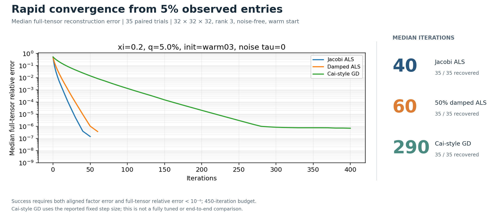
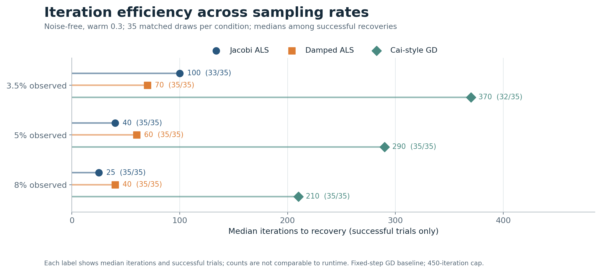
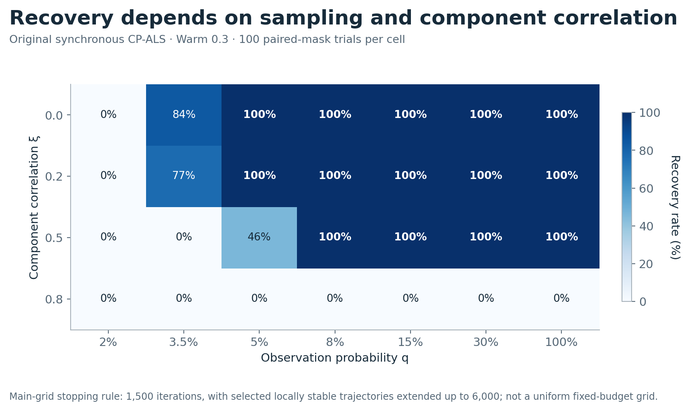
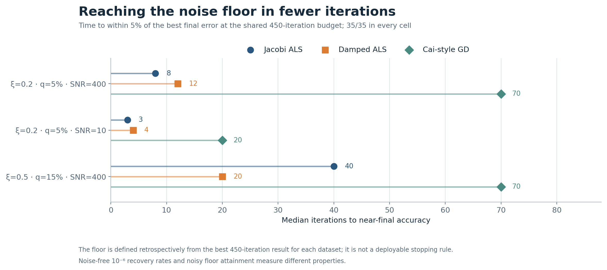

Research project · 2026 – Present
Local Convergence of CP-ALS for Tensor Completion
University of Notre Dame · Advisor: Prof. Yuefeng Han
I aim to develop a rigorous proof of the fast convergence of the synchronous CP-ALS algorithm for noisy tensor completion under a fixed Bernoulli observation mask.
Inspired by Tang, Chhor, Klopp, and Zhang, Revisit CP Tensor Decomposition: Statistical Optimality and Fast Convergence. The present project investigates the fixed-mask tensor completion setting.
Problem & motivation
Consider recovering a low-rank tensor from observations sampled with a Bernoulli mask. We study a synchronous, normalized CP alternating least-squares (ALS) scheme. Unlike the fully observed setting, each factor row is updated from a different random least-squares problem determined by the observed entries.
The fixed observation mask introduces a major difficulty in the convergence analysis: at later iterations, the estimated factors depend on the same observations used to construct the next random Gram matrices. Standard concentration arguments that assume independent estimates and samples do not apply directly.
- Derived observation-dependent, row-wise least-squares updates for the masked CP model.
- Investigated invertibility, conditioning, and concentration of random row Gram matrices.
- Explored candidate local-convergence proof strategies while documenting the obstacles posed by iterate–sample dependence.
- Used synthetic numerical experiments to identify robust-recovery regimes and genuine instabilities of the synchronous update.
Numerical result I · Fast convergence
In a selected noise-free, warm-start experiment on a 32 × 32 × 32 rank-3 tensor, with 5% observed entries and component correlation ξ = 0.2, the three methods were evaluated on 35 matched masked datasets. Successful runs required both factor and full-tensor relative errors below 10−6.

Interpretation. The original synchronous CP-ALS update reaches the specified recovery criterion in fewer median iterations than the tested fixed-step regularized GD baseline. This is not a universal wall-clock speed comparison: the GD method is a particular Appendix-E-style implementation, not an end-to-end reproduction with its spectral initialization, and the comparative initial scaling uses ground-truth weights. The relative ordering can also change with step-size tuning.
Numerical result II · Reliability across initializations
To test whether favorable behavior was confined to isolated trajectories, an independent study used 1,000 newly drawn masks and initialization seeds per condition, with a 3,000-iteration budget.

These results support the existence of favorable regimes with a relatively broad empirical basin of attraction. They should not be interpreted as a guarantee for arbitrary tensors, masks, or initializations.
Numerical result III · Sampling and local stability
In paired experiments at component correlation ξ = 0.2, higher sampling rates can greatly reduce the number of iterations needed for recovery. However, the broader parameter study also exhibits locally unstable regions at high component correlation, including failures under very accurate warm starts.


Numerical result IV · Noise-limited accuracy
When observations include additive noise, perfect recovery is generally not the right performance target. Instead, the experiments examine whether and how quickly the methods reach a noise-dependent error floor.

What these experiments suggest
The theory must reconcile three phenomena: rapid local recovery in favorable low-coherence settings, sensitivity to the structure of initialization, and genuine instability of fully synchronous updates in some regimes. The gap between useful empirical conditions and conservative sufficient conditions remains an important motivation for the proof analysis.
Scope of the evidence. All plotted data are synthetic. The 35-run paired comparison, the separate 1,000-trial validation, and the 100-draw recovery landscape are distinct experimental designs and must not be pooled. The reported median iteration counts are not end-to-end application runtimes, and this page does not claim a completed general convergence theorem.